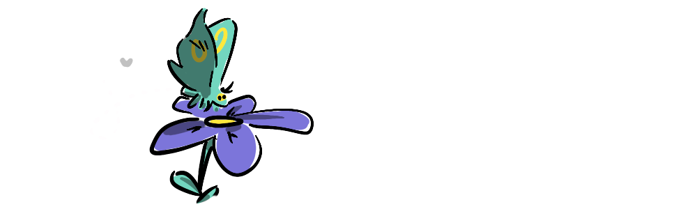
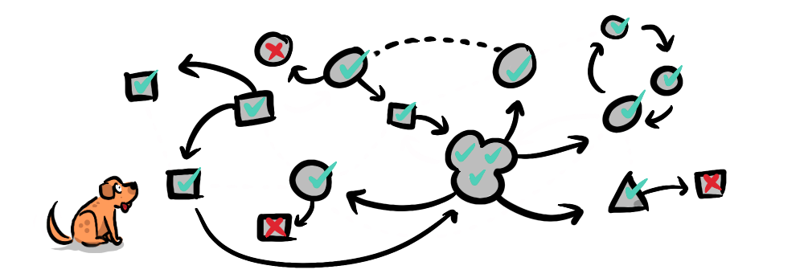
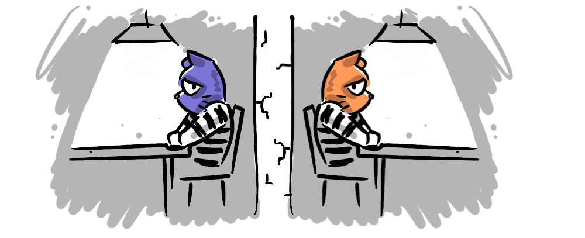
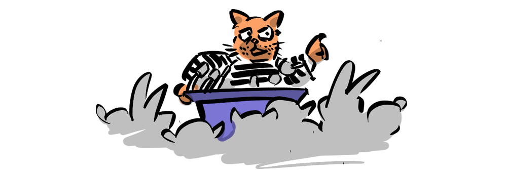
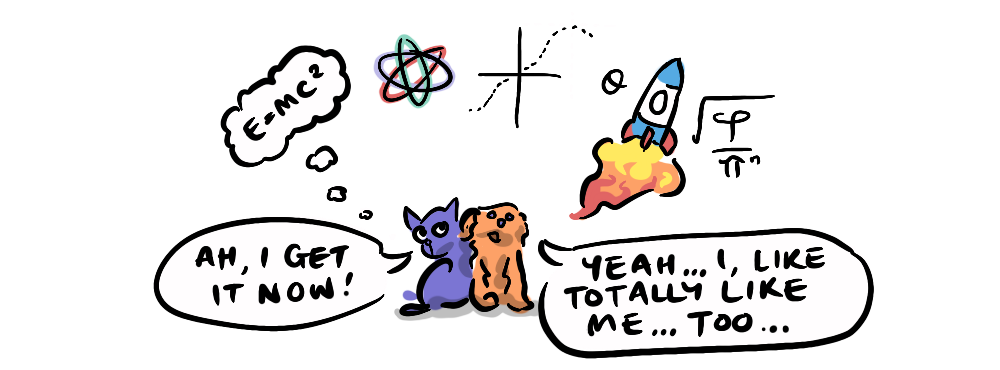
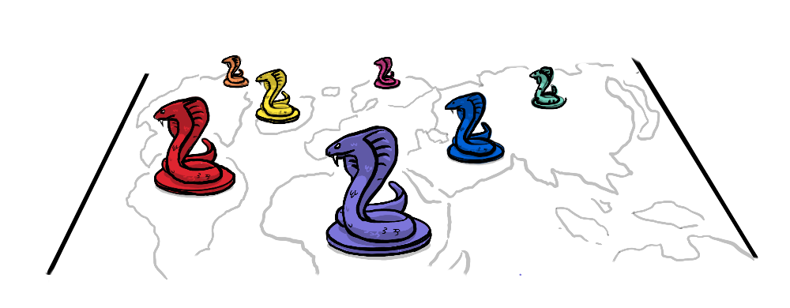
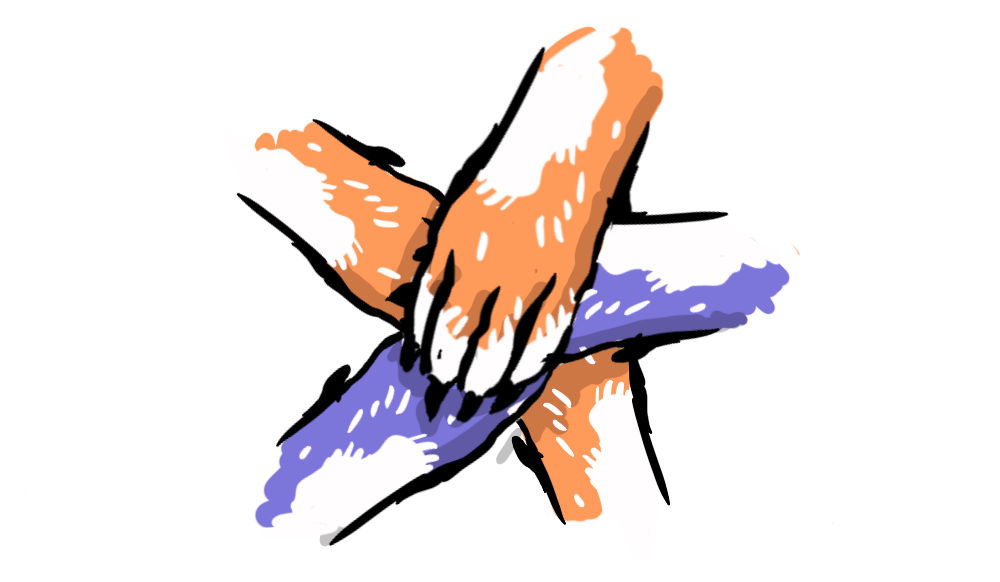

The big idea of Non-zero-sum games is that the whole is greater than the sum of its parts, and so I'm always on the lookout for ways to collaborate with other creators and like-minded people (or not-like-minded people for that matter, creative conflict can be fruitful too!).
A few ways to collaborate with me:
COMMENTING
The easiest way to collaborate is to get into the comments. This is a dynamic site with discussions going on everywhere, your voice is part of it, and your feedback often informs changes to my content. It's a great way to engage with the material and to influence the direction of the site.

GUEST WRITER-ING!
Do you have an interesting story to tell about how non-zero-sum games play out in your life or industry? I'm always interested in hearing case studies, and our readers/listeners come from all walks of life, so the wider-ranging the examples the better. You don't have to be a professional writer (heck, I'm certainly not), and you don't need to worry about illustrations and formatting, I'll sort out all that—like I've done with posts about the "Super-Defector" by Andrew Tane Glen and some more advanced game theory posts by Jaiveer Singh. The only stipulation is that it's unique and doesn't stray too far beyond the aim of the site: to make the world a better place through win-win games. Send me an email, reply to the newsletter, or comment below to get in touch.

SPEAKING AT YOUR WORK / SCHOOL / EVENT / BIRTHDAY...
If you'd like to introduce your colleagues, students, or conference attendees to the idea of non-zero-sum games—perhaps you'd like to incorporate it into your industry or school culture—I'm available to speak at no charge. I'm a keen Toastmaster, I've won a couple of club contests, I've run workshops for kids, lectures for adults, and I'm keen to hone my public speaking skills further about topics on the site. So, if you're interested, get in touch and we'll tailor something specific to your needs.

PODCAST GUEST-ING
Further to this IRL public outreach, I haven't pursued being on any podcasts yet, but am keen to if anyone out there is interested.
I'm also open to interviewing non-zero-heroes with stories to tell on the Non-Zero-Sum James podcast. So, if you've got something to contribute and feel you're more interested in a conversation than in writing, let me know and I'll have you on.

CROSS-POSTING
Do you have a blog post that's relevant to nonzerosum.games and want to get exposure to our audience? Link me to your post, and if it works, I'll cross-post! And visa versa, if you see a post I've written that fits your blog's philosophy, let me know and you can cross-post. An example of this is ToSummarise's post about productivity gains, where she cross-posted in two parts, one here and one at her own site, and I illustrated the posts. Well-considered cross-posting really is a win-win, readers get more quality content they want, and each content creator finds a new audience of like-minded people to connect with.
GAMES
We have a number of mini-games and simulations here on the site, and they're all basically works in progress. If you have ideas for how to improve them, or if you'd like to build off them, help yourself to my code (I can't vouch for its quality), share your ideas, or start a conversation with me about how we could work together to develop a game. I also have a long list of game ideas, which you're free to run with, if you have time (I certainly don't).

LITERALLY ANYTHING ELSE
And finally I'm open to any ideas. I really do enjoy working creatively with others, and while it's nice to have complete creative control, I cooperate creatively at work (as a documentary editor) and see every day the value of dynamic creative relationships, and have really enjoyed those moments of working together here on the blog. I'm interested in political change, so I'm keen to collaborate with like-minded political movers and shakers, charitable organisations, and of course any opportunity to brainwash the youth.
SO...
Get in touch, even if it's just to chat. I'm here to connect with people and build something bigger than me, and I can't do that without you—we can't do it without each other.
